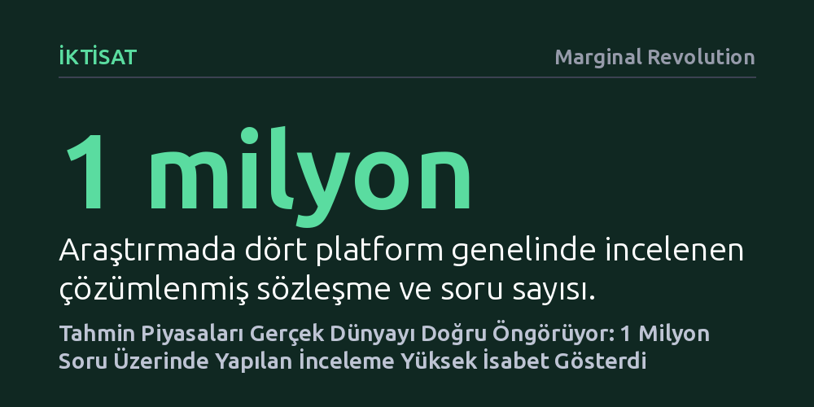

IKTISAT · Marginal Revolution · 2026-10-24
Dört büyük tahmin platformundaki bir milyon soruyu inceleyen yeni bir araştırma, kolektif tahminlerin gerçek dünyayla son derece uyumlu olduğunu ortaya koydu. Yüzde p ihtimal biçilen olayların pratikte de yaklaşık yüzde p sıklıkla gerçekleştiği tespit edildi.
Tahmin piyasalarının salt spekülasyon veya bahis aracı olmadığını, gelecekteki belirsizlikleri ölçmede uzmanlardan daha güvenilir bir kolektif bilgi mekanizması sunduğunu kanıtlıyor.

Son yıllarda Polymarket, Kalshi, Manifold ve Metaculus gibi platformlar; seçim sonuçlarından jeopolitik krizlere kadar pek çok kritik başlıkta geleneksel anketlerin ve uzman yorumlarının önüne geçti. Ancak bu platformların gerçekten ne kadar güvenilir olduğu ve öngörülerinin tesadüften ibaret olup olmadığı ekonomi ve veri bilimi çevrelerinde uzun süredir tartışılıyordu. Saygın bilim dergisi PNAS'ta yayımlanan kapsamlı bir çalışma, sonuçlanmış yaklaşık bir milyon tahmin sözleşmesini inceleyerek bu soruya bugüne kadarki en somut yanıtı sundu.
Araştırmanın en ayırt edici tarafı kapsamının genişliği oldu. İnceleme yalnızca popüler siyasi seçimlerle sınırlı kalmayıp iş dünyasından jeopolitiğe kadar on iki farklı alanı kapsadı. Ayrıca birkaç saat içinde sonuçlanan anlık gelişmelerden yıllara yayılan uzun vadeli süreçlere kadar farklı zaman dilimlerindeki tahminler mercek altına alındı. Bu geniş ölçek, kolektif tahmin mekanizmalarının genel başarısını tarafsız biçimde ölçmeye olanak tanıdı.
Araştırmanın ulaştığı temel bulgu, kolektif tahmin platformlarının şaşırtıcı derecede yüksek bir kalibrasyona sahip olduğunu ortaya koyuyor. İstatistikte kalibrasyon, bir tahmincinin '%70 ihtimal veriyorum' dediği olayların uzun vadede gerçekten de %70 oranında gerçekleşmesi anlamına gelir. Araştırmacılar, incelenen bir milyonluk devasa havuzda bu dengenin neredeyse kusursuz çalıştığını tespit etti. Çalışmada özetlendiği gibi, 'yüzde p olasılık atanan olaylar yaklaşık yüzde p oranında gerçekleşti.'
Bu sonuç, tahmin piyasalarının işleyiş mantığı açısından büyük bir başarı niteliğinde. Bireysel uzmanlar veya medya yorumcuları genellikle aşırı özgüven ya da temkinlilik tuzaklarına düşerek olayların ihtimalini abartır veya küçümser. Oysa finansal teşviklerle ya da itibar mekanizmalarıyla çalışan tahmin platformları, binlerce katılımcının bağımsız bilgisini bir araya getirerek gerçek dünyadaki belirsizliği nesnel bir olasılık dağılımına dönüştürmeyi başarıyor.
Elde edilen genel başarı tablosu, tahmin platformlarının kusursuz veya her durumda yanılmaz olduğu anlamına gelmiyor. Araştırmanın sunduğu daha ayrıntılı analizler, özellikle kamuoyunu derinden etkileyen ve yüksek sonuçlar doğuran kritik başlıklarda sistematik sapmalar görüldüğünü ortaya koyuyor. Katılımcıların duygusal olarak taraf olduğu ya da toplumsal ilginin aşırı yoğunlaştığı bazı hassas alanlarda, olayların ihtimalini olduğundan fazla veya az tahmin etme eğilimleri dikkat çekiyor.
Bunun yanı sıra araştırmacılar çok önemli bir metodolojik uyarıda bulunuyor: Piyasaların toplu olarak yüksek isabet göstermesi, tekil olaylar hakkında kesinlik sağladığı şeklinde yorumlanamaz. Bir olaya yüzde 80 ihtimal verilmesi, o olayın kesinlikle gerçekleşeceği anlamına gelmez; nitekim bu olayların yüzde 20'si gerçekleşmeyecektir. Bu nedenle tahmin piyasaları geleceği kesin olarak bildiren araçlar değil, belirsizliğin büyüklüğünü doğru tartmamızı sağlayan birer olasılık pusulasıdır.
Çalışmanın ortaya koyduğu en temel iktisadi çıkarım, geniş kitlelerin bağımsız yargılarını birleştirmenin gerçek dünya belirsizliği hakkında anlamlı bir bilgi taşıdığıdır. Hayek'in dağınık bilginin piyasa mekanizmasıyla toplanması teorisi, bu araştırmayla bir milyonluk ampirik bir veri seti üzerinden somut biçimde doğrulandı. Piyasalar, geleneksel anketlerin ya da tekil uzman panellerinin yakalayamadığı mikro bilgileri fiyatlara yansıtarak çok daha sağlam bir zemin inşa ediyor.
Önümüzdeki dönemde risk yöneticilerinin, şirket liderlerinin ve politika yapıcıların tahmin piyasalarını birer kumar veya spekülasyon alanı olarak görmekten vazgeçmesi gerekiyor. Aksine, stratejik planlamalarda ve kriz yönetiminde bu platformlardan elde edilen olasılık verilerini resmi birer girdi olarak masaya koymak, kurumların belirsizliği çok daha rasyonel ve gerçekçi yönetmelerini sağlayacaktır.